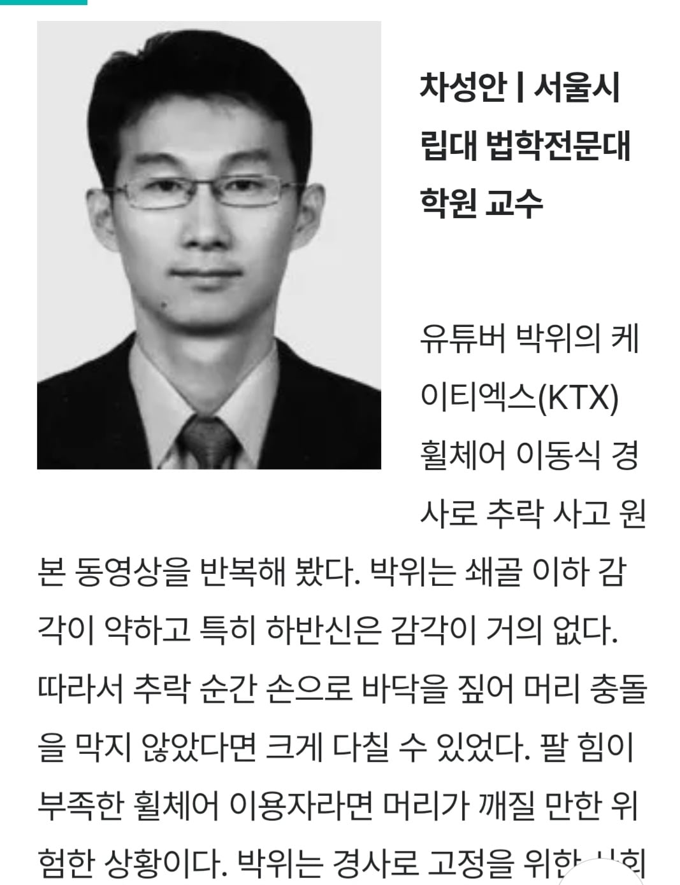
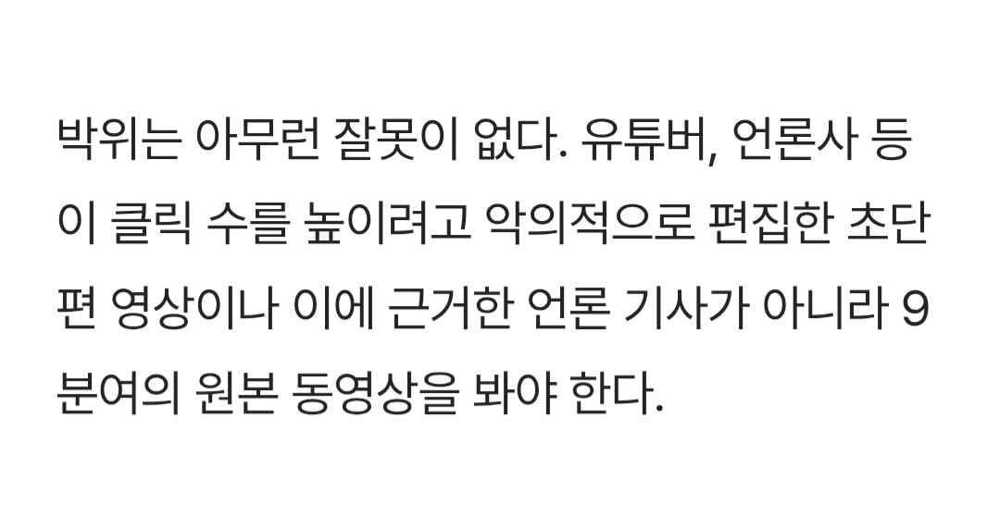
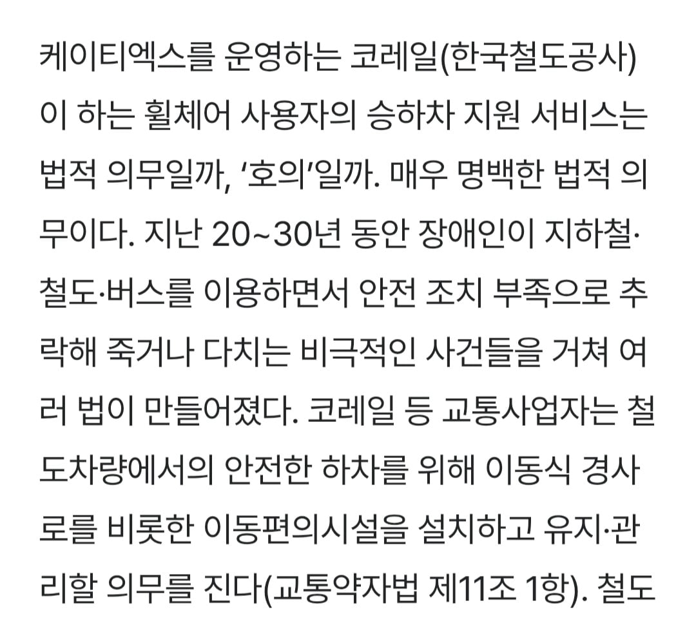
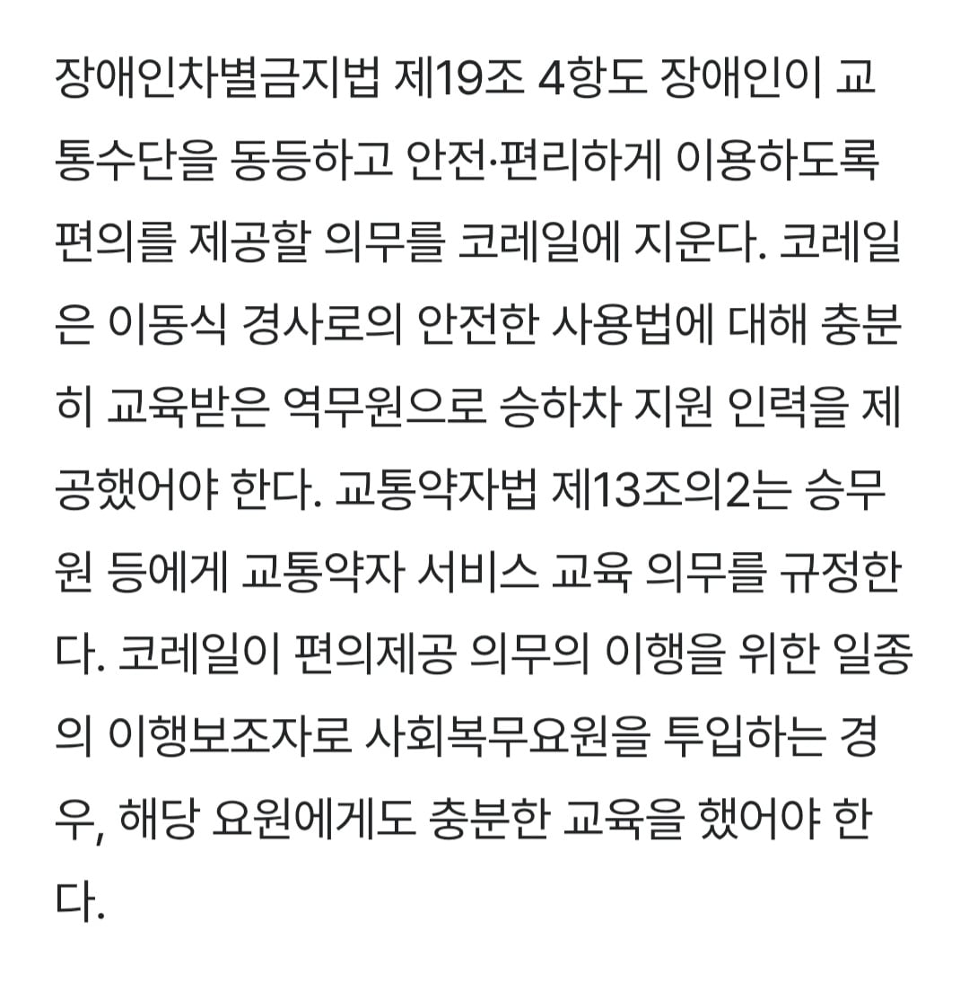
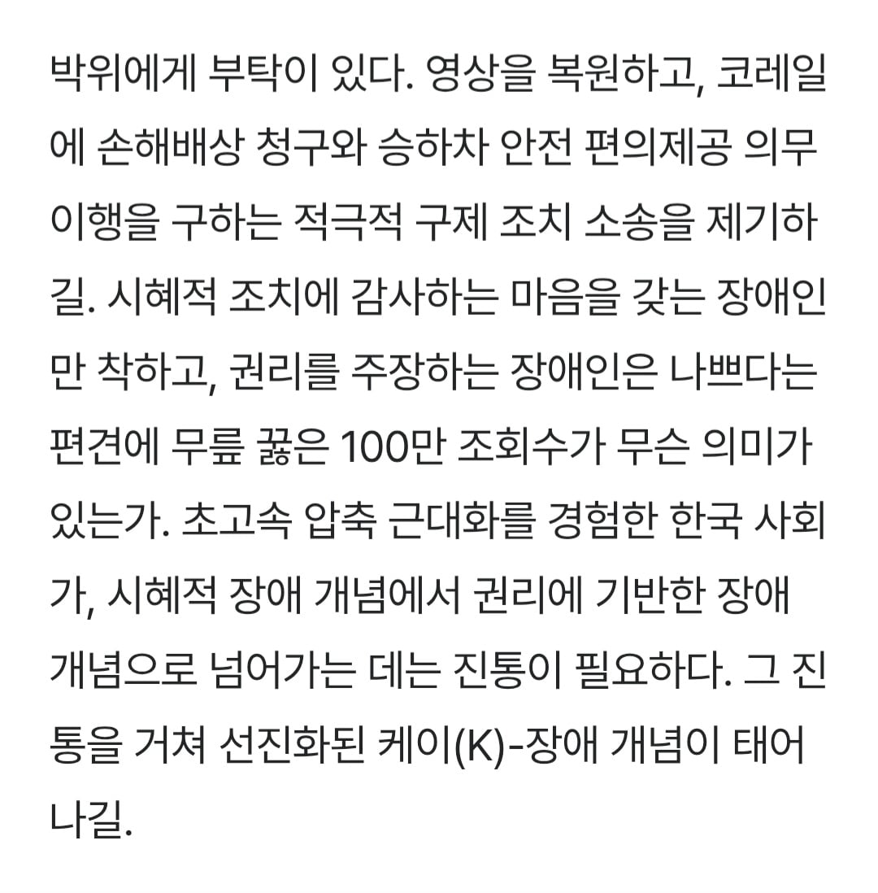

'시혜적 장애 개념에서 권리에 기반한 장애 개념으로'
너무너무 좋은 말이다.
공익으로 끌려가지 않을 권리도 언젠가는 선진화 되겠지???





'시혜적 장애 개념에서 권리에 기반한 장애 개념으로'
너무너무 좋은 말이다.
공익으로 끌려가지 않을 권리도 언젠가는 선진화 되겠지???
댓글 조심
"? 휠체어에 앉아있지 말고 일어나라고"
코레일에 소송걸면 공익들이 법적리스크 사유로 장애인 승하차 아예 업무거부 해버릴거고
그러면 피해는 다시 장애인들에게 돌아오게 될거임
거기서 장애인이 소송걸어서 정직원이 프로토콜 제대로 갖춰서하는걸로 마무리되어야겠지
그럴려면 코레일 채용 2배는 뽑아야할거임
지금도 거의 서커스수준의 인력난으로 돌아감
필요하면 증원해야지
누구 돈으로? ㅋㅋ
그냥 아예 장애인 시설도 짓지 말라고하지 그러냐 ㅋㅋㅋ
지연배상에서 장애인탑승에의한 지연은 보상의무없음으로 바꾼 뒤 밀리면 밀리는대로 탑승보조하면 됨. 모두가 만족할것임.
그럼 전장연이 날뛸 명분이 생겨서 아주 좋아하겠군

도와줘!
나도 교수할까봐 글 쓴거 보면 나도 할수있을거 같은데
적일땐 강하지만 동료로 들어오면 좆밥인 타입
박위보고 일어나라고??
고개숙이지 마라 박위!!!! 맞서싸워!!!!
논란 이후에 파묘된 것중에 까일만한 거 많았던 건 ㅇㅈ하는데. 나도 저 9분 영상 원본 보니까 저건 그 공익 저격도 아니고 기관에서 교육이 필요하다는 취지고 자기 대가리 꺠질뻔해서 그때 화난거야 그럴 수도 있을거 같던데ㅇ
캬 교수님 글 논리적으로 잘 쓰시네
일어나라는데 이거 돌려까기 아닙니까?
원래 경사로 내려갈 때는 휠체어 안전벨트 하고 등쪽으로 천천히 내려가는게 맞는거라니까
박위가 안전규정 준수하지 않아서 일어난 사고인데 도와준 공익이 왜 욕을 먹어야되는데
본문 중 교통약자 서비스 교육 의무에 따르면
경사로 이용법은 박위보다 역무원이 더 잘 알았어야 하는 거 아님?
본문도 공익은 보조인력일 뿐이고
서비스 주체는 역무원이었어야 한다고 함
박위랑 공익 얘기만 나오고, 역무원 책임 얘기는 왜 안 나오는지 의아함
역무원이 장애인 전문보조 인력급은 절대 될 수 없다고 보고
경사로를 안전하게 설치해주고 이동을 돕는 수준 정도이지 이건 장애인도 충분히 인지하고 있다고 생각함
원본 영상 보면 경사로가 완전히 내려가기도 전에 박위가 급하게 출발하고 벨트 제동 뒤로이동 셋 다 안지킨걸로 보임
성격이 급한건지 KTX를 너무 많이 타봐서 자신감이 넘친 건진 모르겠지만 박위도 조심했다면 안일어날 수 있었던 사고지
다르게 말하면 언젠가 일어날 사고였음
전문 보조 인력급이라는 게 어느 수준을 말하는지는 모르겠지만
다른 나라, 가령 일본에서 실제로 행해지고 있는 수준 정도는 불가능하다고 할 수 없겠지
하다못해, 매뉴얼은 피로 쓰여지는 법이니까
최소한 슬로프를 발로 밟아서 걸려 넘어지게 하는 행동은 하지 않도록 교육할 수 있고
니가 말한 벨트 착용, 후면 이동 등도 슬로프를 준비하는 역무원이 충분히 미리 주의를 주고 안내할 수 있는 거임
이 정도는 절대 무리한 게 아닐텐데
궁금한게 내릴 때 직원이 휠체어를 뒤에서 밀어주면 안되나? 이게 더 위험하나
이거 나도 전에 얘기했던 건데
공익 얼굴 공개한 건 박위가 공익한테 잘못한 건 맞음
근데 그거랑 코레일이 박위한테 잘못한 건 별개임
박위는 동쪽에서 뺨 맞고 서쪽에 분풀이 하긴 했는데
코레일한테 뺨 맞은 피해자인 것도 맞음
둘은 별개의 사건임
안전한 승하차를 위한 300번의 노력은 모르겠고
아무튼 손해배상 청구하고 소송하라!
돈이 되는게 모든 문제야
케이티엑스(KTX) , 케이(K)-장애
뭐지 열받게하려고 일부러 이러나?
어딜 공익 노비주제에 박위대군께 무례를 저지르느냐!!!!!!!1
법적으로 의무를 지우더라도 감사함이 없으면 해주고도 ㅈ같지.
내 돈내고 밥먹는거 당연한데 종업원이 반찬이나 식사 가져다 주면 “감사합니다.” 하잖아.
박위 영상 다 본건 아니지만,
내가 본 영상에서는 사람이 “감사”가 없었음.
휠체어탄사람한테 일어나라하네
시립대에도 로스쿨이 있는지 첨알았네
"일어나라"
케이(K)-장애인은 또 첨들어보네